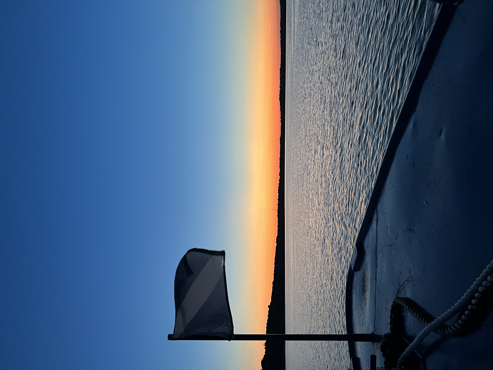
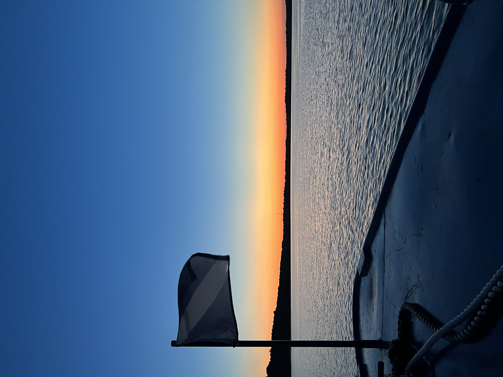
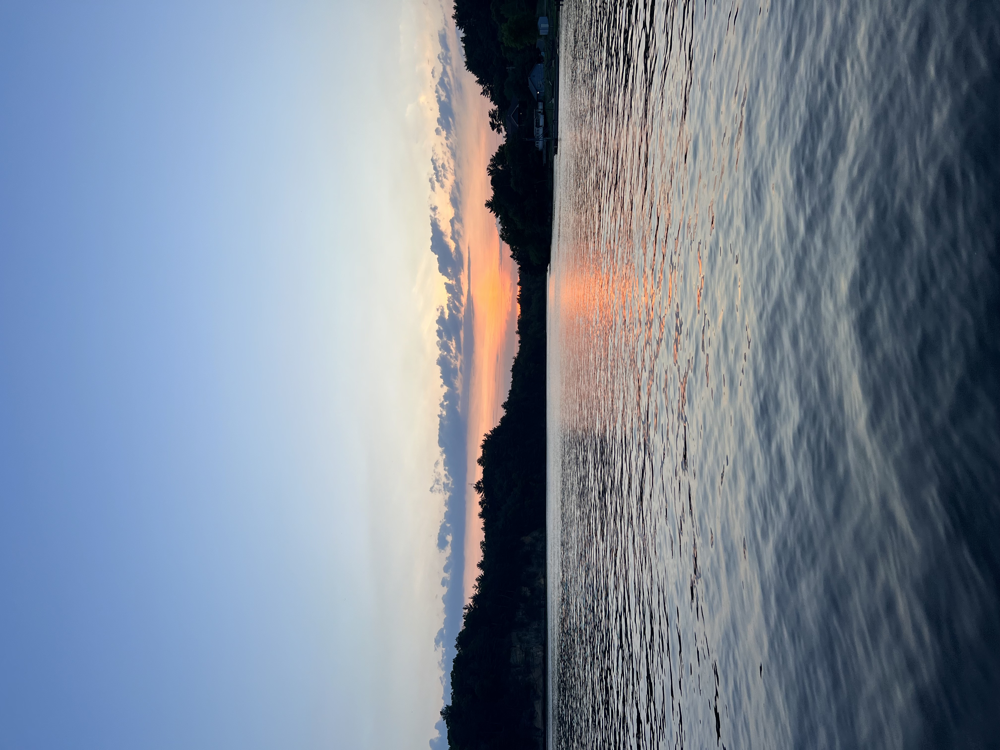
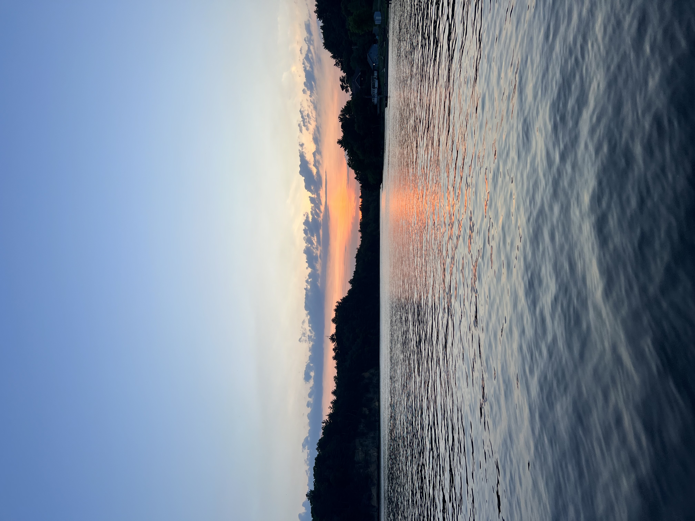
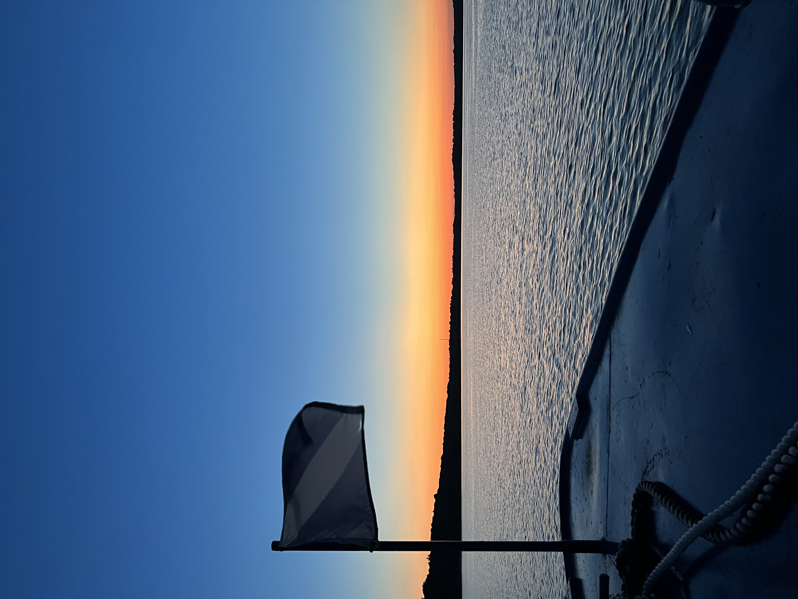
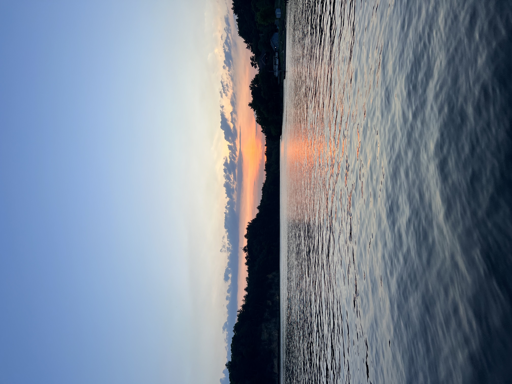

 

In the summertime, I am a tour guide on the Wisconsin River. I spend my days on double decker tour boats giving tours to 100+ people (each time!). We make two stops, one at Witches Gulch and one at Stand Rock. I love my job and I love the river!
If you're interested, click here to buy tickets!


These are some of my favorite parts on the tour: